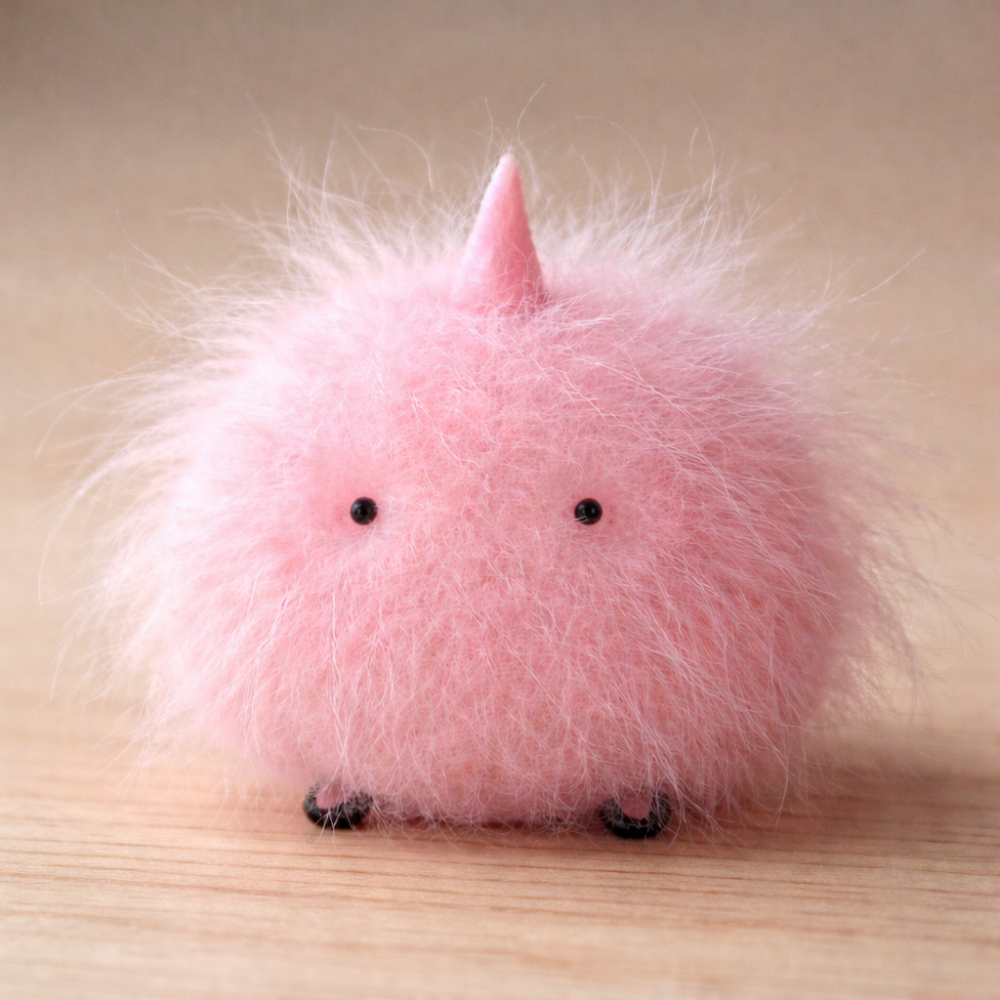
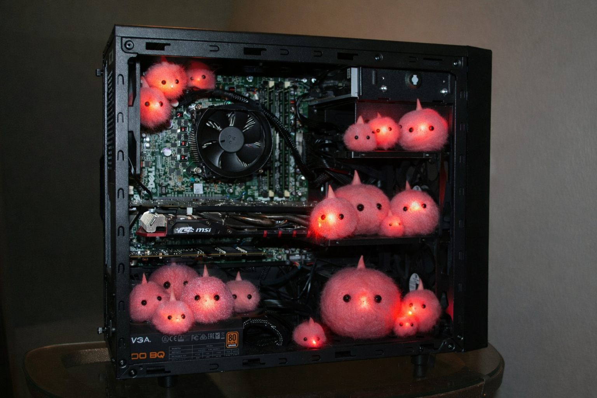

shit you can buy
Other Content
Snars-A New Discovery

Introduction
Recent domestic observations have led to the identification of a previously undocumented organism informally designated The Snar. The organism appears to exhibit unusual electro-parasitic
behavior, feeding directly on household electrical systems and low-voltage computer components. This paper summarizes the initial observations, containment methods, and preliminary behavioral
experiments conducted on a small population discovered within a personal desktop computer.
The Discovery Of The Organism

The discovery occurred during what initially appeared to be a routine hardware malfunction. Over a period of approximately 72 hours, my personal computer began exhibiting
unusual symptoms including repeated system crashes, excessive thermal output (average internal case temperature rising from 41°C to 83°C under minimal load), and
spontaneous power fluctuations. Initial diagnostic tests suggested severe electrical instability. Hardware components—including
the power supply unit and motherboard voltage regulators—eventually failed due to what appeared to be sustained electrical drain.
Upon disassembling the computer case to investigate the damage, I discovered several small, previously unknown organisms clustered near the power
supply cables and GPU power connectors. These creatures appeared to be feeding directly on
electrical current, attaching themselves to conductive surfaces in a manner somewhat analogous to leeches.
Containment Proceedure
Immediate containment became necessary once the population within the computer case was confirmed. Due to the lack of specialized laboratory
equipment, I conducted a series of improvised containment trials using common household containers.
- Three containers were tested:
- Glass jar (0.8 L capacity)
- Food storage container (polypropylene, 1.2 L)
- 1 L Tesco plastic juice jug
Unexpectedly, the Tesco 1 L plastic jug proved significantly more effective. The Snars displayed a strong preference for the jug’s material and
geometry, settling along the interior walls within 12–18 seconds of placement inside.Preliminary hypotheses suggest the following factors may contribute:
The polyethylene density (~0.94 g/cm³) may approximate the natural nesting surfaces preferred by Snars. The curved cylindrical shape may mimic the topology of electrical cable bundles.
Residual orange juice sugars may have provided trace electrolytes, increasing surface conductivity.
Population Survey
Following successful containment of the first group, a wider inspection of the household electrical system was conducted. Additional Snars were discovered in several locations including:
- inside the computer power supply
- along mains extension leads
- near wall sockets connected to high-draw appliances
A rough population estimate suggests between 18 and 26 individuals were present in the immediate electrical environment. Interestingly, they appeared to show clear preference
for alternating current (AC) over low-voltage DC sources, congregating primarily near the 230 V mains supply rather than USB or low-power components.
Conclusion
I concluded two things, one is that they feed on energy
and two is that they like hot environments, especially if they have a lot of static. The 1L jugs I mentioned are good because they also can hybernate in cold storage too but you can only
store a few before there is an overload of energy, otherwise you could get a shock that is fatal. Another thing to note is when they consume a certain amount of energy, they can glow red which indicates they are supercharged, which means
it is extremely dangerous to touch.
Theories And Possible Explanations
My Only assumption is that these have come from a parallel universe different from ours as there has never been any records of a creture that consumes energy, because electricity in high amounts often damages
and kills cells in carbon based life forms, again, this is just my theory, it has not yet been confirmed by other institutions and scientists.
Article written by James Miller